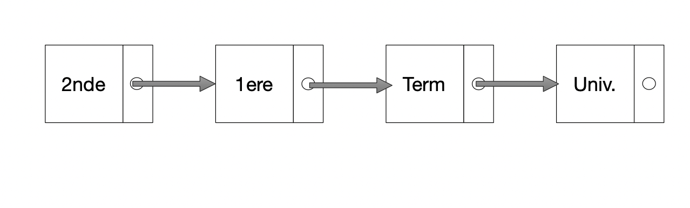
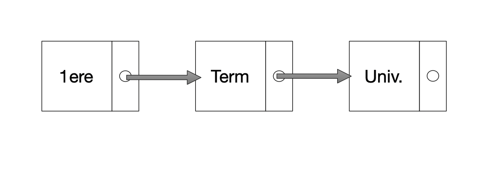
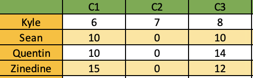
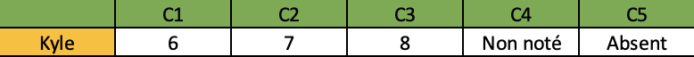

types abstraits
Ce cours comporte plusieurs parties:
- les types abstraits: Lien, liste chainée et tableau statique
- TP utilisant la notion de tableau statique: Lien, moyenne glissante.
- Cours sur les Piles: une structure linéaire: Lien
- exercices en ligne (TP) sur les Piles: Lien
- Cours sur les Files et autres structures linéaires: Lien
Types abstraits
La résolution d’un problème par un programme nécessite:
- de définir les données du problème
- d’utiliser des instructions du langage sur ces données
Souvent, la résolution du problème demande d’arranger ces données dans un type abstrait, afin d’avoir une résolution plus efficace.
Un type abstrait est défini par son interface, qui est indépendante de son implémentation.
Les types abstraits sont des types structurés. On a déjà vu des types structurés natifs: les types séquences de texte (string), les types séquentiels (listes, tuples), et les mappages (dictionnaires).
Un type abstrait est caractérisé par une interface de programmation qui permet de manipuler les données de ce type. Sans pour autant avoir connaissance du contenu des fonctions proposées par l’interface.
Spécifier un type abstrait, c’est définir son interface, sans prejuger de la façon dont ses opérations sont implémentées.
Implémenter, c’est fournir le code de ces opérations. Plusieurs implémentations peuvent correspondre à la même spécification. On verra dans ce chapitre la programmation dans un style fonctionnel. Il viendra plus tard la programmation par objet.
On verra dans un premier temps, deux exemples de types abstraits: Les listes chainées et les tableaux. Dans un chapitre ultérieur, nous verrons les types abstraits Piles, Files, et Graphes.
Listes chaînées
Une liste chaînée est une séquence ordonnée d’éléments. L’avantage sur un tableau (la Liste native en Python), c’est qu’en parcourant la Liste chainée, quelle que soit la profondeur de parcours, celle-ci présente la même structure.
On peut donc lui associer des méthodes ou fonctions, qui seront indépendantes de cette profondeur. Que l’on pourra utiliser de la même manière à chaque niveau de la liste chainée.

classes à parcourir après le collège

classes à parcourir après la 2nde
La liste L précédente représente la chaine: "2nde" -> "1ere" -> "Term" -> "Univ
La liste chainée L contient 2 éléments (tete, queue) et queue est elle-même une liste chainée, contenant aussi (tete, queue). Le dernier élément: (tete, ()).
On utilisera par exemple une liste chainée lorsqu’il y a une filiation entre les éléments, et surtout, lorsque l’on doit souvent INSERER ou SUPPRIMER des éléments qui ne sont pas forcement à la fin de la liste.
L’interface d’une liste chainée
L’interface fournit certaines fonctions.
| fonctions qui implémentent la liste chainée L | nom |
|---|---|
| créer une liste vide | creer_liste() |
| questionner si la liste est vide | liste_vide(L) |
| insérer un élément e en tête de liste et retourne une nouvelle liste | inserer_tete(L,e) |
| retourne l’élément de tête (premier élément) | tete(L) |
| retourne la liste privée de son premier élément (retourne donc le 2e élément) | queue(L) |
insere un nouvel element_a_inserer juste avant l’élement recherché dans la liste |
insere(L,element_recherche,element_a_inserer) |
| retourne une liste python avec tous les éléments de la liste chainée | elements_liste(L) |
Le contenu de ces fonctions va dépendre de l’implémentation choisie par le programmeur.
Par exemple, si l’on choisit d’implémenter la liste chainée par un tuple, on aura pour la premiere fonction:
Alors que si l’on choisit plutôt une liste:
Généralités sur les listes chainées
Une liste chainée est un objet:
-
non mutable: on peut la modifier en partie (ajout/suppression d’un élément), mais sa copie se fait par valeur.
-
dynamique: on peut modifier sa taille après création, par exemple en faisant:
L = inserer(L, e), mais cela va créer un nouvel objet. -
les éléments ont une relation d’ordre entre eux.
-
on peut atteindre un élément au rang i en temps proportionnel à i, avec une boucle par exemple.
Mémoire: Contrairement aux tableaux, les éléments d’une liste chaînée ne sont pas placés côte à côte dans la mémoire. Chaque case pointe vers une autre case en mémoire, qui n’est pas nécessairement stockée juste à côté.
L’interface d’une liste chainée doit aussi proposer l’insertion d’un élément au rang i, en temps constant. (Intercaler cet élément entre 2 éléments de la liste). Ceci ne peut pas être réalisé avec l’implémentation vue plus haut.
Nous verrons d’autres implémentations pour ce type abstrait.
Attention: les listes chaînées et les Listes Python sont différentes, il ne s’agit pas des mêmes objets.
Tableaux, choix d’une structure de données native en python
Les tableaux statiques sont des structures de données de taille fixe, où chaque donnée est du même type. C’est comme ceci que sont représentées les collections dans des langages comme C, Java, Ocaml, …
La taille du tableau est fixe à sa création : on ne peut pas l’agrandir ou le réduire sans en recréer un nouveau.
Un tableau peut être représenté en Python à l’aide d’une liste (type list), un tuple (type tuple), ou bien une matrice numpy (numpy.array).
List python
Les tableaux en python sont implémentés par le type list, qui est en réalité un tableau dynamique: leur taille est variable, et les éléments stockés peuvent être de types différents (idem pour Javascript). Pour utiliser le type list en tant que tableau statique, on s’interdira les aspects dynamiques.
- Création
On rappelle que, pour créer une liste python, on peut utiliser les techniques suivantes:
- création par extension: en listant les éléments du tableau:
T = [1,2,3] - par concaténation: On peut utiliser une somme d’éléments à l’aide des opérateurs
+et*, par exemple:T = [0] * 100 - par compréhension: on s’appuie sur un itérateur (fonction génératrice), exemple:
T = [i for i in range(ord('A'), ord('Z')+1], ouT = [x**2 for x in range(1,11)] - par ajout dans une table vide (append)
- à l’aide de la fonction
list:codes = list(range(ord('A'), ord('Z')+1),T = list('bonjour')
-
Manipuler On accède à un élément d’un tableau à l’aide d’un indice, qui peut être positif:
T[1]est le deuxière élément par exemple,T[0]étant le premier. Ou bien à l’aide d’un entier négatif, ce qui fait queT[len(T)-1]est le même queT[-1] -
Parcourir
- Le plus simple est de parcourir directement par élément
- parcourir par indice:
Très utile si on veut modifier les valeurs lors du parcours:
ou bien lorsque l’on veut parcourir 2 tableaux à la fois:
numpy.array
En Python, les tableaux fixes peuvent être implémentés via la classe array du module numpy.
La dimension est fixée à la construction. Les indices commencent à 0.
Pour des tableaux à plusieurs dimensions: On peut accéder aux éléments d’un array A en utilisant la syntaxe A[i, j] , où i et j sont respectivement le numéro de ligne et le numéro de colonne de l’élément au sein du tableau. L’opérateur : permet de sélectionner plusieurs éléments, voire tout une ligne ou colonne.
Tuple
Pour un tuple, celui-ci contiendra 2 données:
- la liste des valeurs, de dimension fixe. On mettra
Nonepour les valeurs non renseignés. - la valeur de la taille de la liste.
Par exemple:
C’est alors un objet qui est:
- statique: sa taille ne varie pas une fois celui-ci créé
- non mutable: mais avec un élément qui lui, peut être mutable:
On ne peut pas modifier T[0] ou T[1]. Ce sont les éléments d’un tuple.
Mais on peut modifier en partie T[0], par exemple avec une instruction du genre: T[0][i] = x. La copie de T[0] se fait par reference.
Un tableau peut servir à implémenter une grille de notes par exemple:

Tableau de notes

Tableau des notes de Kyle
Petits rappels sur le tuples:
- Construction par extension:
- Construction par concaténation:
- Construction par compréhension:
- avec la fonction
list:
L’interface d’un tableau
| fonctions qui implémentent un tableau T (Array) | nom |
|---|---|
| taille du tableau | taille(T) |
| demander l’élément au rang i | element(T,i) |
| remplacer l’élément au rang i par e | remplacer(T,i,e) |
Tableaux multidimentionnels
Alors, pour accéder à l’un des éléments, on fait: tableau[ligne i][colonne j]:
List et tuple
Array
Tableaux dynamiques et tableaux statiques
Les tableaux vus ci-dessus sont des tableaux statiques: leur taille ne peut pas être modifiée. Dans le cas où l’on ait besoin d’agrandir le tableau, il faut le copier dans un nouveau tableau, plus grand.
Python implémente naturellement un autre type de tableau, que l’on appelera dynamique: Les Listes Python. Ce problème de dimension n’apparait pas dans les Listes Python, qui apportent de surcroit des méthodes bien pratiques comme append et pop.
Exercices sur les listes
On propose l’implémentation suivante pour les listes chainées:
Exercice 1: parcours scolaire
Le parcours scolaire est un type abstrait qui s’apparente à une Liste. Les éléments sont disposés dans cette Liste sous la forme:
L’interface propose les fonctions suivantes:
creer_liste, liste_vide, inserer, tete, queue.
1. Quelles instructions, utilisant l’interface, vont créer la Liste parcours_lycee de la manière suivante: ('Terminale', ('Premiere', ('Seconde', ())))?
2. Quelle instruction va permettre de connaitre la dernière classe visitée lors du parcours scolaire?
3. Que retourne queue(parcours_lycee)? (choisir)
- la première classe du parcours scolaire
- le parcours scolaire sans la dernière année
4. Que retourne le script suivant?
5. On souhaite utiliser ce type abstrait pour décrire le parcours universitaire. Quelle serie d’instructions va créer la structure de données du parcours qui ira de Licence 1 à Master 2? Cette liste s’appelera parcours_univ
6. On souhaite maintenant créer une liste unique appelée scolarite, issue de la jonction des deux listes, parcours_lycee et parcours_univ. Ecrire le script correspondant.
Exercice 2: composition d’un train
On cherche à implémenter la construction d’un train pour voyageurs, motrice et wagons, à l’aide d’une liste chainée.
Le train suit l’ordre suivant:
- motrice
- wagon_1
- wagon_2
- wagon_3
1. Qu’est ce qui est affiché par le programme suivant?
2. Quelle instruction de l’interface de liste faut-il utiliser pour consulter la nature du dernier wagon du train?
3. La fonction elements_liste va retourner les éléments de la liste chainée, en une liste python. Quelle instruction, utilisant elements_liste, va retourner la liste ['wagon_3', 'wagon_2', 'wagon_1','motrice']?
4. INSERTION: On souhaite modifier la liste L1 et intercaler wagon_bar entre le wagon_1 et le wagon_2.
- Quelle instruction utilisant la fonction
inserede l’interface de liste va modifier L1 de cette façon? - Quelle sera l’objet retourné?
- Repérer les différentes parties de cette fonction.
5. Supprimer le wagon de queue à l’aide d’une instruction de l’interface.
Exercice 3: separation d’une liste
1. Compléter la fonction separe qui sépare les éléments d’une liste en deux listes selon s’ils sont inférieurs (strictement) ou supérieurs (et égal) à une valeur v:
2. Compléter alors le programme au niveau du repère ICI. Le programme affiche les 2 listes une fois celles-ci séparées. La liste L contiendra les valeurs à séparer.
Exercices sur les Tableaux statiques
On propose l’implémentation suivante pour les tableaux statiques:
Exercice 1: Utiliser l’interface du tableau
Tableau de notes
1. Soit le tableau qui implémente les notes de Kyle dans les matières C1, C2, C3:
a. Ecrire l’instruction qui retourne la note de Kyle dans la matière C3.
b. Kyle n’a pas eu 8, mais 12/20 dans la matière C3. Ecrire l’instruction qui modifie sa note 8 en 12, à partir d’une fonction de l’interface des tableaux.
c. Compléter le script donné plus haut pour cette fonction.
d. Ecrire le script d’une fonction moyenne qui calcule la moyenne des notes du tableau T.
2. Soit le tableau suivant qui implémente les notes de Kyle, Sean, Quentin et Zinedine dans les matières C1, C2, C3:
a. Recopier le tableau T et remplacer les ‘?’ par les bonnes valeurs (utiliser l’image plus haut). Que signifie le tuple (4,3) placé comme 2e élément du tableau?
b. Utiliser l’instruction taille de l’interface pour donner le nombre d’élèves dans le tableau. Puis le nombre de colonnes (matières):
2c. Modifier la fonction remplacer pour que celle-ci modifie la note dans la matière voulue pour un élève donné.
Par exemple: Pour modifier la note de la colonne 2 de l’élève au rang 0 (premiere ligne):
Si on veut lui mettre 12, on fera: remplacer(T,0,2,12)
3. Quelle instruction, utilisant la fonction moyenne va retourner la moyenne des notes de Zinedine?
4. moyenne_matiere
Programmer la fonction moyenne_matiere qui va calculer la moyenne sur une matière pour la colonne j d’une matrice M.
Pour programmer cette fonction moyenne_matiere(M,j), il faudra:
- Faire la somme $M[0][j] + M[1][j] + M[2][j] + M[3][j]$. Utiliser un accumulateur
sdans une boucle bornée. - Diviser
spar le nombre de notes - retourner la valeur
Exercice 2: moyenne glissante et tableau statique
énoncé à la page suivante.
Liens et prolongements
- Types séquentiels natifs cours David Latreyte